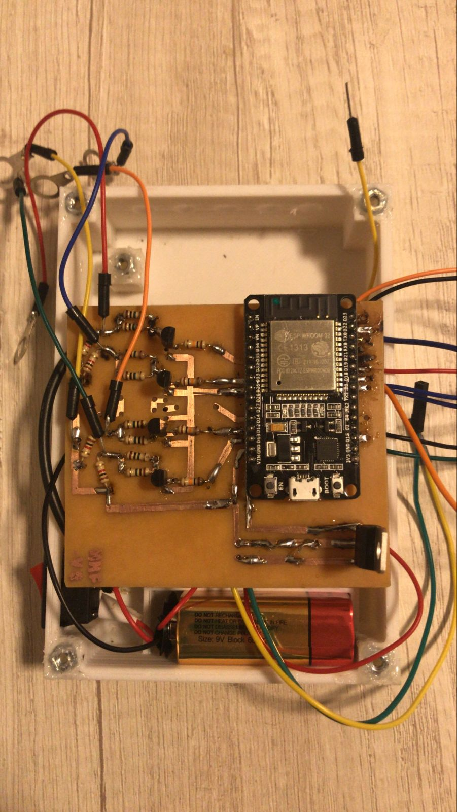
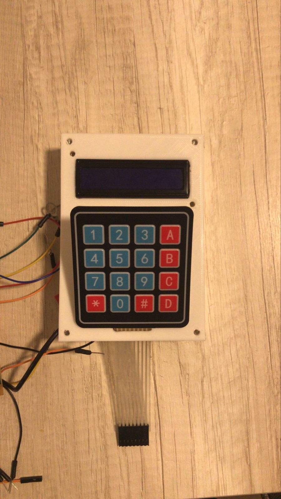

Accessible Thermometer for Visually Impaired Users
Fundación Gaude | 2025 – Córdoba, Argentina
Development of an accessible thermometer designed for visually impaired users,
focused on improving usability and autonomy through an intuitive interface and
user-centered design.
- Developed embedded software using an ESP32 microcontroller.
- Designed the device structure using Fusion 360.
- Assembled and prototyped the device through 3D printing.
- Integrated hardware and software to create a functional assistive device.
- The final device was donated to Fundación Gaude, a Córdoba-based organization supporting visually impaired individuals.
A detailed explanation of the project is available in a video (in Spanish).
ECG Signal Generator and Lead Selection System
Academic Project | Biomedical Instrumentation | 2024
Development of a biomedical device capable of generating ECG and sinusoidal signals,
allowing the selection of different leads for testing and analysis of electrocardiography systems.
- Developed embedded software using an ESP32 microcontroller.
- Implemented ECG waveform simulation and sinusoidal signal generation.
- Designed a user interface with membrane keypad and LCD display.
- Integrated DAC output, signal routing, and control logic.
- Designed and prototyped the enclosure using 3D printing.


Turismo Nacional Front Nose Aerodynamic Redesign
Detroit Racing | 2025
Redesign of a Turismo Nacional front nose and fender assembly aimed at improving
aerodynamic performance, developed from concept and CAD modeling to prototype support
and on-track validation.
- Detected an aerodynamic improvement opportunity during trackside engineering support.
- Redesigned front-end surfaces in SolidWorks considering aero and manufacturing constraints.
- Supported prototype development through 3D-printed insert models.
- Participated in on-track validation using data acquisition results.
- Contributed to a measured drag improvement.
Flight Performance and Stability Analysis of the Alenia C-27J Spartan
Academic Project | Flight Mechanics | 2024
Academic project focused on the performance, static stability, and dynamic
stability analysis of the Alenia C-27J Spartan, combining computational
evaluation with technical report development.
- Analyzed aircraft performance in steady, climbing, maneuvering, takeoff, and landing flight conditions.
- Evaluated longitudinal, lateral, and directional static stability, including trim, control, and neutral point related results.
- Determined longitudinal and lateral-directional dynamic modes and studied their time responses.
- Used Python and LaTeX for calculations, visualization, and report preparation.
Numerical Study of the Blasius Boundary Layer
Academic Project | Fluid Mechanics | 2023
Academic project focused on the numerical solution of the Blasius boundary
layer equation, combining iterative methods, flow-field analysis, and
technical report development.
- Implemented the Blasius equation solution in MATLAB using ODE45 and a shooting method approach.
- Obtained characteristic boundary layer quantities, including thickness, displacement thickness, and momentum thickness.
- Computed velocity components, vorticity, and circulation from the numerical solution.
- Prepared a technical report presenting methodology, results, and physical interpretation.
Skills
Technical Skills
Applied Aerodynamics
Numerical Modeling
Data Analysis
Vehicle Dynamics
Simulation
Track Engineering
3D CAD Design
Structural Analysis
Software & Tools
Python
MATLAB
SolidWorks
Ansys
MoTeC
AiM
LaTeX
Autodesk Inventor
Patran/Nastran
OptimumKinematics
SQL / MySQL / SQLite
Soft Skills
Commitment & Responsibility
Teamwork
Initiative
Continuous Learning
Problem Solving
Technical Communication
Adaptability
Engineering Experience
Practical engineering experience developed through motorsport, vehicle development, telemetry analysis, and technical software tools.
Hands-on involvement in motorsport engineering projects combining aerodynamics,
telemetry analysis, software development, CAD design, and rapid prototyping
for high-performance vehicle applications.
- Performed aerodynamic development tasks, including CFD-based rear wing optimization in Ansys Fluent and the design of aerodynamic components for racing vehicles.
- Developed a technical motorsport management software in Python with integrated database tools for set-up, tyres, aerodynamic configuration, track sessions, and lap sector analysis.
- Supported track engineering activities using MoTeC and AiM for telemetry acquisition, data interpretation, and vehicle performance evaluation.
- Created 3D CAD models in SolidWorks and contributed to the fabrication of functional parts and prototypes through additive manufacturing.
CFD
Python
MoTeC / AiM
SolidWorks
Telemetry
3D Printing
Junior engineering support focused on trackside data interpretation and the
design and implementation of a new front-end component for a competition car.
- Contributed to junior track engineering tasks, supporting data acquisition and interpretation for vehicle performance analysis.
- Designed, developed, and helped implement a new front nose concept for the race car, from the initial proposal to manufacturing and track use.
Track Engineering
Vehicle Development
CAD Design
Performance Analysis
References
References
-
Dr. Juan Pablo Saldia
Professor of Flight Mechanics and Space Systems
Facultad de Ciencias Exactas Físicas y Naturales, Universidad Nacional de Córdoba
jsaldia@unc.edu.ar
-
Dr. Horacio Aguerre
Researcher at CIMEC and Aerodynamics/CFD Lead at FDC Diseño y Desarrollo
aguerrehoracio@gmail.com